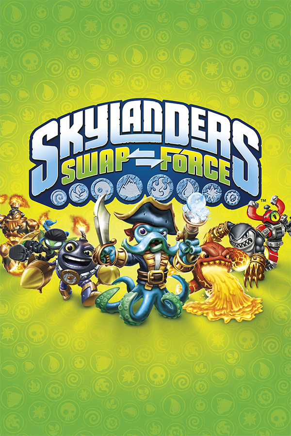

|  | |
| Playtime | Not Played |
| Last Activity | 5/3/2014 19:39:13 |
| Added | 4/24/2025 1:30:35 |
| Modified | 4/30/2025 2:42:27 |
| Completion Status | Not Played |
| Library | Xbox |
| Source | Xbox |
| Platform | Microsoft Xbox 360 |
| Release Date | 10/13/2013 |
| Community Score | 84 |
| Critic Score | 81 |
| User Score | |
| Genre | Platform Role playing Toys-to-life |
| Developer | Beenox n-Space Vicarious Visions |
| Publisher | Activision |
| Feature | Multiplayer Single Player |
| Links | Wikipedia MobyGames MobyGames |
| Tag | [Game Engine] Vicarious Visions Alchemy [People] artist: Dave E. Phillips [People] artist: Lee Harker [People] artist: Steven Olds [People] composer: Lorne Balfe [People] designer: Mike Stout [People] director: Jeremy Russo [People] producer: Chris Wilson [People] producer: Dawn Pinkney [People] producer: Eric Carter [People] producer: Nick Ruepp |
Skylanders: Swap Force (stylized as Skylanders: SWAP Force) is a 2013 platform game developed by Vicarious Visions and Beenox and published by Activision. It is the third main game in the Skylanders video game and toy franchise, following 2012's Skylanders: Giants, which was a direct sequel to 2011's Skylanders: Spyro's Adventure.
It is the first Skylanders game to be released in North America before other regions, unlike the previous two games where Australia got the installments first. It is also the first Skylanders game not to be owned by Vivendi.
The gameplay of SWAP Force is based on the two previous games, Skylanders: Spyro's Adventure and Skylanders: Giants, but unlike them Skylanders now have the ability to jump. Players use a portal to bring real-life figures into the game; SWAP Force introduces a new Portal of Power that has new technology that makes the SWAP Force characters work correctly. The SWAP Force characters have top and bottom halves that can be separated from each other and recombined with halves from other characters. In total, there are 256 combinations between the top and bottom halves. The SWAP Force characters also have eight distinct ways of moving, which are necessary to enter side areas called "SWAP Zone Challenges". These are Rocket, Spin, Dig, Stealth, Teleportation, Bounce, Speed and Climb.
For years, the SWAP Force protected the volcano that replenishes Skylands' magic every hundred years. However, following a battle, they were caught in the eruption, which blasted them apart, sent them to Earth, and gave them the ability to swap powers. The Skylanders must prevent the Elementals from being evilized, stop Kaos, and save the Skylands.
SWAP Force features sixteen new core characters and sixteen new swappable characters, in addition to sixteen reposed Skylanders from previous games. The sixteen new swappable characters are Wash Buckler, Blast Zone, Free Ranger, Freeze Blade, Night Shift, Magna Charge, Stink Bomb, Rattle Shake, Hoot Loop, Trap Shadow, Grilla Drilla, Spy Rise, Rubble Rouser, Doom Stone, Boom Jet and Fire Kraken. The sixteen new core characters are Bumble Blast, Countdown, Dune Bug, Fryno, Grim Creeper, Pop Thorn, Punk Shock, Rip Tide, Roller Brawl, Scorp, Scratch, Slobber Tooth, Smolderdash, Star Strike, Wind Up, and Zoo Lou.
Every 100 years, the Elementals, a group of four ancient creatures consisting of the Flashfin, the Terrasquid, the Frost Hound, and the Tree Spirit, unite to replenish the Skylands' magic through Mount Cloudbreak. During the last eruption ceremony, Kaos' mother Kaossandra tried to destroy the volcano, but a team of Skylanders defended it. Following the volcano's eruption, they were sent to Earth and gained the ability to swap their tops and bottoms, transforming them into the SWAP Force.
100 years later, Captain Flynn goes to see the eruption and finds a girl named Tessa, who is being pursued by a fleet of monsters called Greebles and explains her home is in danger. Although he succeeds in driving them off with help from the Skylanders, his ship is damaged in the crash. Afterwards, Flynn and Tessa arrive at her home village of Woodburrow and meet the village crier, Rufus. They learn that the chieftess has been captured and Kaos has obtained a device called the Evilizer, which uses Petrified Darkness to turn others into stronger and more aggressive crystal versions of themselves.
The Skylanders rescue the chieftess and bring her back to the village. However, Kaos has learned of the Elemental's whereabouts and plans to evilize one of them, which will cause Mount Cloudbreak to turn evil and spread Darkness across Skylands. Glumshanks begins to doubt Kaos's ability to take over the Skylands, so Kaos evilizes him and sends him to his dig site. Tessa leads the Skylanders to Mudwater Hollow, the location of the Flashfin, to stop Kaos from evilizing it. They make their way to Kaos' dig site and stop the operation; in the process, they defeat Glumshanks and turn him back to normal.
Glumshanks returns to Kaos, who is disappointed by his failure, and is greeted by Kaossandra, who mocks him for his incompetence. The Skylanders attempt to find the Terrasquid and make their way to the town of Motleyville hoping to get help from its baron, Sharpfin. When they arrive, Baron Von Shellshock, a servant of Kaos, evilizes Tessa's bird Whiskers and sends him to attack them. After dealing with Shellshock and turning Whiskers back to normal, Sharpfin promises to help the Skylanders find the Terrasquid and sends his crew to fix Flynn's ship. They arrive at the location of the Terrasquid, where they fight the Fire Viper; afterwards, Kaossandra shows up at Kaos' lair to help him.
Sharpfin takes Flynn and the Skylanders to a small elf village in the tundra, where they meet the frost elf Avril. After helping her deal with a cyclops invasion in her village, she tells them the Frost Hound is located in the Frostfest Mountains. The Skylanders make their way to the Frost Hound, where Kaossandra sends her servant Mesmerelda to attack them, but they defeat her and rescue the Frost Hound.
Kaos then attacks Fantasm Forest, the home of the Tree Spirit, using Petrified Darkness as a fuel source to evilize her and burn down her domain. The Skylanders make their way to the forest and defeat the trolls while capturing Kaos. The eruption ceremony begins as the chieftess names Tessa the new chieftess of Woodburrow and the Elementals go to begin the eruption. However, Kaossandra shows up and takes back Kaos while kidnapping Tessa. Using Flynn's newly repaired ship, the Skylanders, Flynn and Sharpfin make their way to Kaos' fortress and defeat Kaossandra, imprisoning her in a mirror prison and rescuing Tessa. Kaos reveals that he filled the volcano with Petrified Darkness to turn it into a massive Evilizer.
As Flynn, Sharpfin, and Tessa go with the Skylanders into the volcano, Kaos tells Glumshanks to finish the pile of Petrified Darkness. However, after the pile falls down on top of him, he is transformed into a giant Evilized version of himself known as "Super Evil Kaos". The Skylanders defeat him and destroy the crystals on his body, reverting him to normal. They escape the volcano and Kaos and Glumshanks discover they have been swapped. The volcano then erupts, replenishing the magic in Skylands as everyone celebrates.
In another part of Skylands, Hugo, Flynn and Cali visit Flynn's hometown, Boomtown, where the people are celebrating in his honor. The celebration is interrupted when Count Moneybone, the lord of the Undead, attacks, stealing Flynn's statue and turning Cali into an undead. The Skylanders and the Swap Force must stop Moneybone before he turns all of Skylands undead.
As with the previous installments of the game, Skylanders: SWAP Force is available for purchase in starter kits that include a copy of the game itself, the Portal of Power, three characters to begin or supplement a player's collection, a poster of the entire SWAP Force collection, cards, stickers, and Web codes
Skylanders: Swap Force received "generally favorable" reviews for most platforms according to review aggregator Metacritic; the Nintendo 3DS version received "mixed or average" reviews. The Metacritic scores for the game were the highest and most positive of the series on most platforms. Gaming website Quarter to Three gave both the Wii U and Xbox 360 a perfect score of 5/5. Video game website Gaming Age gave the PlayStation 3 version the highest grade of an "A" and further commented that "whether you’re a Skylanders fan or a gamer who’s looking for a charming and unique family-friendly game series to get into, Skylanders Swap Force comes highly recommended."
During the 17th Annual D.I.C.E. Awards, the Academy of Interactive Arts & Sciences nominated Skylanders: Swap Force for "Family Game of the Year".